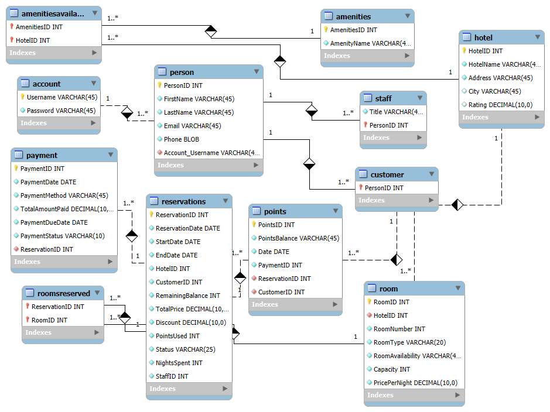
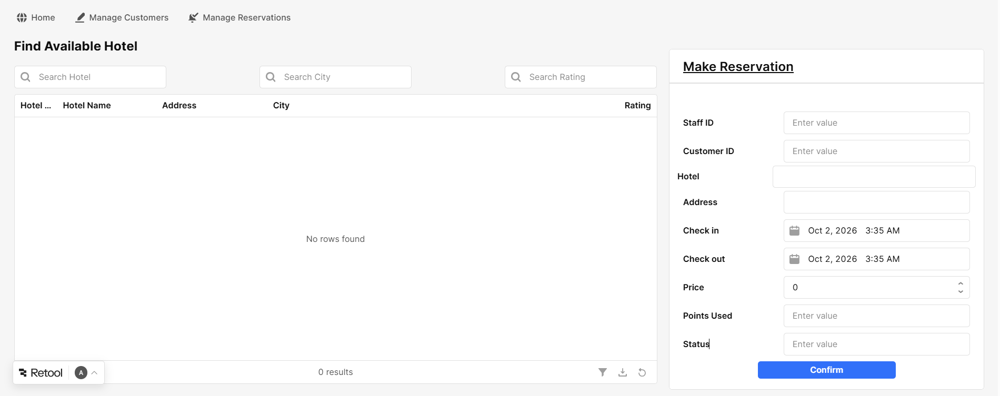

Project Overview
Dream Tours is a collaborative database project developed for an online travel agency. The project focused on designing a relational database to support hotel reservations and manage customers, hotels, rooms, amenities, payments, reservations, and customer loyalty points. The system was designed to streamline the process of searching, booking, and managing hotel reservations.
SQL | MySQL | MySQL Workbench | Retool | Mockaroo | Database Modeling
My Contributions
Contributed to database modeling and design feedback, data-entry planning, Retool interactive table development and code functionality, project presentation materials, and the final report. I also collaborated with the team on Mockaroo-generated test data and Retool implementation.
Database Design
The team developed a relational database structure covering customers, accounts, hotels, rooms, reservations, payments, amenities, loyalty points, and staff. The project included conceptual, logical, and physical data models to define entities, relationships, primary keys, and foreign keys.

Dream Tours relational database model developed in MySQL Workbench.
Database Implementation
The database was normalized through 1NF, 2NF, and 3NF to reduce redundancy and improve data integrity. The design used decomposition and junction tables to manage many-to-many relationships between reservations and rooms, and between hotels and amenities.
The database was implemented in MySQL using SQL DDL and DML to create tables, define primary and foreign key relationships, load test data generated with Mockaroo, and perform database operations required by the reservation system.
Retool Application
The MySQL database was integrated with Retool to create an interactive interface for the reservation system. The application included functionality for customer management, hotel search, reservation creation and management, account creation, customer information updates, and loyalty points tracking.

Dream Tours hotel search and reservation interface developed using Retool.
Project Outcome
The project provided hands-on experience in relational database design, SQL implementation, data normalization, test-data generation, and integrating a MySQL database with a Retool application for a practical hotel reservation system.